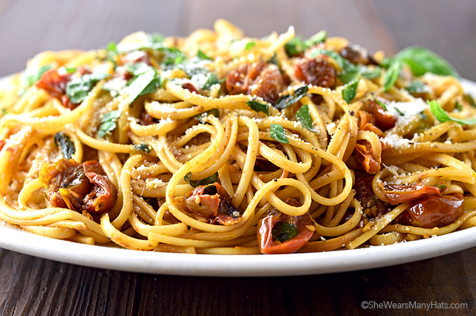

Tomato Garlic Pasta

Description
This delicious made from scratch pasta will blow your mind and taste buds away!
Ingredients
- 2 fresh tomatoes
- 6 cloves of garlic
- olive oil
- 3-4 servings of pasta noodles
Steps
- Chop the tomatoes roughly, the smaller you cut them, the quicker the cooking process will be.
- Mince the garlic cloves as small as possible.
- Start boiling your pasta for 10 to 11 minutes
- On a hot pan, cook down the tomatoes and garlic with plenty of olive oil
- When tomatoes are rendered down and have decreased in size by more than half, the pasta should be done
- Add the pasta into the sauce and stir until everything is well mixed and you are done!